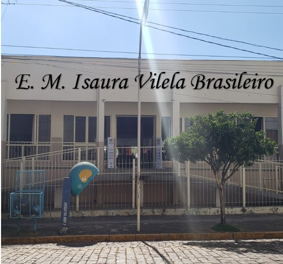

Escola Municipal Isaura Vilela Brasileira

Em Isaura Vilela Brasileiro oferece toda a estrutura necessária para o conforto e desenvolvimento educacional dos seus alunos, como por exemplo: Banda Larga, Refeitório, Biblioteca, Quadra Esportiva, Quadra Esportiva Coberta, Laboratório de Ciência, Sala de Leitura, Pátio Coberto, Pátio Descoberto, Sala do Professor e Alimentação. Além disso, na Isaura Vilela Brasileiro é muito bem avaliado pelos pais, alunos e funcionários da instituição, reflexo do comprometimento com um ensino de qualidade que a escola oferece.